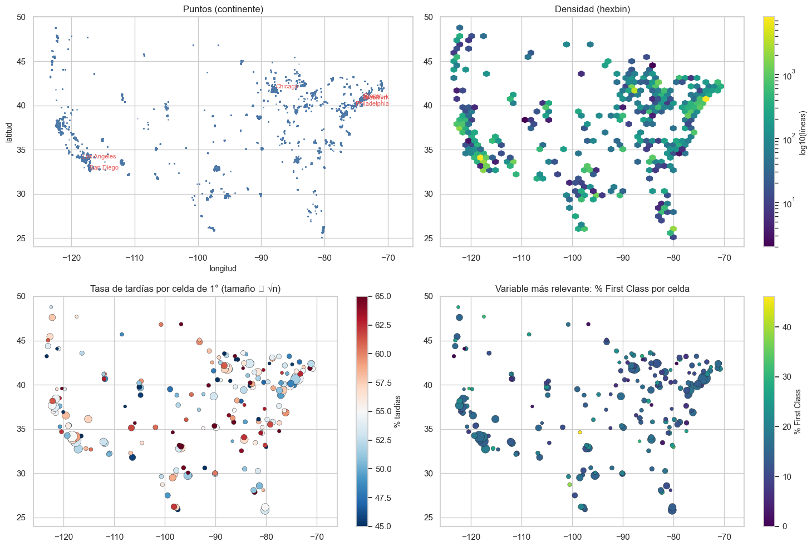
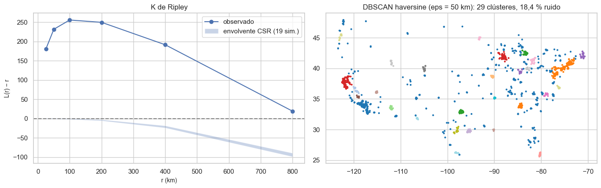
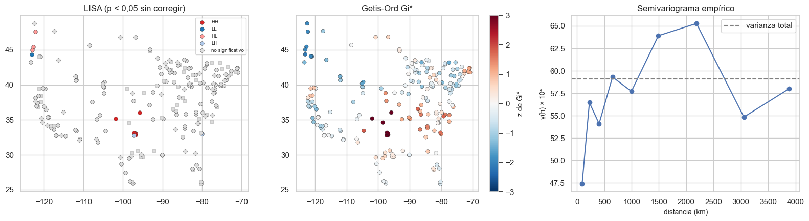
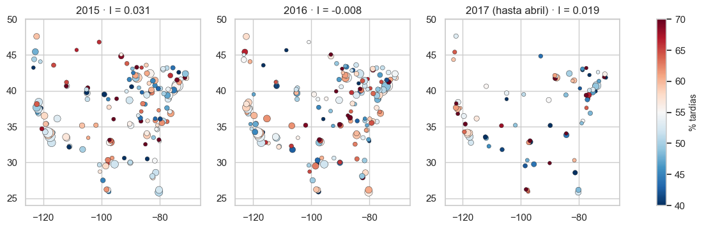
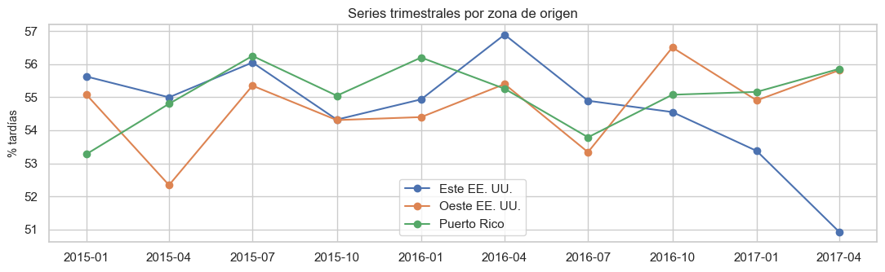

8. Componente espacial (2.7) y espacio-temporal (2.8)#
Obligatorio porque el dataset trae Latitude y Longitude. La ficha del dataset las
describe como la ubicación de la tienda; en los datos hay una coordenada por
cliente (cada cliente tiene siempre la misma), ubicada en EE. UU. y Puerto Rico.
El destino del pedido no tiene coordenadas: solo país, región y mercado (en 164
países). Por eso el análisis espacial con coordenadas describe el origen del pedido,
y el destino se analiza por unidad geográfica.
Las medidas de autocorrelación siguen a [Anselin, 1995] (LISA) y [Getis and Ord, 1992] (Gi*). Para proteger la privacidad y estabilizar las tasas, las métricas espaciales se calculan sobre celdas de 1° × 1° (≈ 100 km) con al menos 30 líneas. Solo entrenamiento.
from pathlib import Path
import re, sys, warnings
import numpy as np
import pandas as pd
import matplotlib.pyplot as plt
import seaborn as sns
from IPython.display import Markdown, display
project_root = Path.cwd().resolve()
while not (project_root / "_config.yml").exists():
if project_root.parent == project_root:
raise FileNotFoundError("No se encontró _config.yml. Ejecuta el notebook dentro de la carpeta del libro.")
project_root = project_root.parent
if str(project_root) not in sys.path:
sys.path.insert(0, str(project_root))
for _folder in ("tables", "figures"): # se crean si no existen
(project_root / _folder).mkdir(exist_ok=True)
from src.project_utils import *
configure_plots()
pd.set_option("display.max_columns", 80)
pd.set_option("display.width", 170)
pd.set_option("display.max_colwidth", 70)
TABLES = project_root / "tables"
def md_out(text):
display(Markdown(text))
from scipy import stats
from scipy.spatial import ConvexHull
from sklearn.cluster import DBSCAN
train = load_train()
y = train[TARGET]
rng = np.random.default_rng(RANDOM_STATE)
Validación de coordenadas#
lat, lon = train[LAT], train[LON]
AREAS = {"continental": (24, 50, -125, -66), "Puerto Rico": (17.8, 18.6, -67.5, -65.1),
"Hawái": (18.5, 22.5, -161, -154), "Alaska": (51, 72, -170, -129)}
def zona(la, lo):
for k, (a, b, c, d) in AREAS.items():
if a <= la <= b and c <= lo <= d:
return k
return "fuera del área"
pts = train.groupby([LAT, LON]).agg(lineas=(TARGET, "size"), estado=("customer_state", "first"), ciudad=("customer_city", "first")).reset_index()
pts["zona"] = [zona(a, b) for a, b in zip(pts[LAT], pts[LON])]
decimales = lat.astype(str).str.split(".").str[1].str.len()
val = pd.DataFrame([
("Sistema de referencia", "grados decimales; se asume WGS84 (EPSG:4326)"),
("Latitud fuera de [-90, 90] / longitud fuera de [-180, 180]", int((~lat.between(-90, 90) | ~lon.between(-180, 180)).sum())),
("Coordenadas nulas o (0, 0)", int((lat.isna() | lon.isna() | ((lat == 0) & (lon == 0))).sum())),
("Latitud negativa (hemisferio sur) con estado de EE. UU.", int((lat < 0).sum())),
("Longitud positiva con estado de EE. UU. (signo invertido probable)", int((lon > 0).sum())),
("Latitud y longitud intercambiadas (|lon| < 90 y lat fuera de [15, 72])", int(((lat < 15) | (lat > 72)).sum())),
("Ubicaciones distintas", es(len(pts), 0)),
("Líneas en la ubicación más repetida", es(int(pts["lineas"].max()), 0)),
("Clientes con más de una coordenada", int((train.groupby(CUSTOMER_COL)[[LAT, LON]].nunique() > 1).any(axis=1).sum())),
("Decimales de la latitud (mediana)", int(decimales.median())),
("Ubicaciones fuera del área de estudio (EE. UU. + PR)", int((pts["zona"] == "fuera del área").sum())),
("Líneas fuera del área de estudio", int(pts.loc[pts["zona"] == "fuera del área", "lineas"].sum())),
], columns=["comprobación", "resultado"])
val.to_csv(TABLES / "validacion_espacial.csv", index=False)
display(val)
display(pts.groupby("zona").agg(ubicaciones=("lineas", "size"), lineas=("lineas", "sum")))
display(pts[pts["zona"] == "fuera del área"].head(10))
| comprobación | resultado | |
|---|---|---|
| 0 | Sistema de referencia | grados decimales; se asume WGS84 (EPSG:4326) |
| 1 | Latitud fuera de [-90, 90] / longitud fuera de [-180, 180] | 0 |
| 2 | Coordenadas nulas o (0, 0) | 0 |
| 3 | Latitud negativa (hemisferio sur) con estado de EE. UU. | 6 |
| 4 | Longitud positiva con estado de EE. UU. (signo invertido probable) | 91 |
| 5 | Latitud y longitud intercambiadas (|lon| < 90 y lat fuera de [15, ... | 6 |
| 6 | Ubicaciones distintas | 8.431 |
| 7 | Líneas en la ubicación más repetida | 307 |
| 8 | Clientes con más de una coordenada | 0 |
| 9 | Decimales de la latitud (mediana) | 8 |
| 10 | Ubicaciones fuera del área de estudio (EE. UU. + PR) | 17 |
| 11 | Líneas fuera del área de estudio | 227 |
| ubicaciones | lineas | |
|---|---|---|
| zona | ||
| Hawái | 28 | 945 |
| Puerto Rico | 4439 | 54265 |
| continental | 3947 | 87638 |
| fuera del área | 17 | 227 |
| latitude | longitude | lineas | estado | ciudad | zona | |
|---|---|---|---|---|---|---|
| 0 | -33.937553 | 18.571438 | 6 | CO | Aurora | fuera del área |
| 2198 | 18.248312 | -85.685257 | 5 | MI | Wyoming | fuera del área |
| 2554 | 18.256500 | -86.454208 | 18 | IN | Indianapolis | fuera del área |
| 4643 | 28.007509 | 82.461998 | 22 | FL | Tampa | fuera del área |
| 5364 | 33.728558 | 84.742676 | 8 | GA | Douglasville | fuera del área |
| 6095 | 35.233566 | -125.450050 | 12 | CT | Enfield | fuera del área |
| 6305 | 36.163929 | 115.049789 | 14 | NV | Las Vegas | fuera del área |
| 6314 | 36.198677 | 115.263077 | 16 | NV | Las Vegas | fuera del área |
| 6856 | 38.911991 | 77.092094 | 25 | DC | Washington | fuera del área |
| 8201 | 42.665550 | -12.250183 | 9 | OR | Portland | fuera del área |
Interpretación. No hay coordenadas imposibles, nulas ni invertidas. La precisión declarada (≈ 8 decimales, milímetros) es espuria: las coordenadas son de ciudad o dirección aproximada. Unas pocas ubicaciones están fuera del área de estudio y no coinciden con el estado declarado. La mayoría tiene la longitud con el signo invertido (Tampa, Las Vegas o Washington aparecen con longitud positiva, en Asia); otras están en el Atlántico o en el hemisferio sur. Son errores de georreferenciación; no se corrigen (no se sabe con certeza cuál es el valor correcto). Como son muy pocas líneas, se excluyen de los mapas y de las estadísticas espaciales (no del dataset). Hawái (28 ubicaciones) queda fuera de los mapas continentales por escala. La mayor concentración está en Caguas (Puerto Rico), con más de un tercio de las líneas: la «geografía» del origen está dominada por un único punto.
Visualización: puntos, densidad y mapas del objetivo#
No se usa un mapa base de teselas para no depender de servicios externos; se rotulan las ciudades con más líneas como referencia.
ok = train[[zona(a, b) in ("continental", "Puerto Rico") for a, b in zip(lat, lon)]].copy()
ok["celda"] = spatial_cells(ok[LAT], ok[LON]).to_numpy()
cel = ok.groupby("celda").agg(n=(TARGET, "size"), tasa=(TARGET, "mean"), lat=(LAT, "mean"), lon=(LON, "mean"),
first_class=("shipping_mode", lambda s: (s == "First Class").mean()))
cel_ok = cel[cel["n"] >= 30].copy()
top_c = ok.groupby("customer_city").agg(n=(TARGET, "size"), lat=(LAT, "median"), lon=(LON, "median")).nlargest(8, "n")
fig, axes = plt.subplots(2, 2, figsize=(15, 10))
cont = ok[ok[LAT] > 20]
ax = axes[0, 0]
ax.scatter(cont[LON], cont[LAT], s=1, alpha=0.2, color="#4c78a8")
for c, r in top_c.iterrows():
if r["lat"] > 20: ax.annotate(c, (r["lon"], r["lat"]), fontsize=8, color="#e45756")
ax.set_title("Puntos (continente)"); ax.set_xlabel("longitud"); ax.set_ylabel("latitud")
ax = axes[0, 1]
hb = ax.hexbin(cont[LON], cont[LAT], gridsize=45, bins="log", cmap="viridis", mincnt=1); fig.colorbar(hb, ax=ax, label="log10(líneas)")
ax.set_title("Densidad (hexbin)")
ax = axes[1, 0]
cc = cel_ok[cel_ok["lat"] > 20]
sc = ax.scatter(cc["lon"], cc["lat"], c=100 * cc["tasa"], s=np.sqrt(cc["n"]) * 3, cmap="RdBu_r", vmin=45, vmax=65, edgecolor="k", lw=0.3)
fig.colorbar(sc, ax=ax, label="% tardías"); ax.set_title("Tasa de tardías por celda de 1° (tamaño ∝ √n)")
ax = axes[1, 1]
sc = ax.scatter(cc["lon"], cc["lat"], c=100 * cc["first_class"], s=np.sqrt(cc["n"]) * 3, cmap="viridis", edgecolor="k", lw=0.3)
fig.colorbar(sc, ax=ax, label="% First Class"); ax.set_title("Variable más relevante: % First Class por celda")
for a in axes.ravel(): a.set_xlim(-126, -66); a.set_ylim(24, 50)
plt.tight_layout(); save_figure(fig, "08_mapas.png"); plt.show()
pr = ok[ok[LAT] < 20]
md_out(f"Puerto Rico (no mostrado en los mapas continentales): {es(len(pr), 0)} líneas, {es(pr[TARGET].mean(), 1, pct=True)} tardías; "
f"continente: {es(len(cont), 0)} líneas, {es(cont[TARGET].mean(), 1, pct=True)} tardías.")
C:\Users\juand\AppData\Local\Temp\ipykernel_14132\2853702401.py:26: UserWarning: Glyph 8733 (\N{PROPORTIONAL TO}) missing from font(s) Arial.
plt.tight_layout(); save_figure(fig, "08_mapas.png"); plt.show()
C:\Users\juand\OneDrive\Desktop\MachineLearning\jbook_ml202603\Avance_1_Polo_Pallares\src\project_utils.py:168: UserWarning: Glyph 8733 (\N{PROPORTIONAL TO}) missing from font(s) Arial.
fig.savefig(path, dpi=dpi, bbox_inches="tight")
c:\Users\juand\miniconda3\envs\ml_venv\lib\site-packages\IPython\core\pylabtools.py:152: UserWarning: Glyph 8733 (\N{PROPORTIONAL TO}) missing from font(s) Arial.
fig.canvas.print_figure(bytes_io, **kw)

Puerto Rico (no mostrado en los mapas continentales): 54.265 líneas, 55,0 % tardías; continente: 87.638 líneas, 54,9 % tardías.
Interpretación. Los clientes se concentran en grandes áreas metropolitanas (Nueva York, Los Ángeles, Chicago…) y en Puerto Rico. La tasa de tardías por celda oscila alrededor del 55 % sin un patrón geográfico visible; las celdas extremas son las de pocas líneas (más ruido). La proporción de envíos First Class tampoco tiene patrón espacial: el modo de envío no depende del lugar.
Patrón de puntos y cobertura#
Índice del vecino más cercano (Clark-Evans), función K de Ripley (como L(r) − r frente a una envolvente de aleatoriedad espacial completa, CSR) y clústeres DBSCAN con distancia haversine. Se usan las ubicaciones únicas del continente (muestra de 2.500).
u = ok[ok[LAT] > 20][[LAT, LON]].drop_duplicates()
u = u.sample(min(2500, len(u)), random_state=RANDOM_STATE)
lat0 = np.radians(u[LAT].mean())
xy = np.c_[u[LON].to_numpy() * 111.32 * np.cos(lat0), u[LAT].to_numpy() * 110.57]
hull = ConvexHull(xy)
area = hull.volume # en 2D, .volume es el área (km²)
ce = clark_evans(u[LAT], u[LON], area)
radii = [25, 50, 100, 200, 400, 800]
rk = ripley_k(u[LAT], u[LON], radii, area)
from matplotlib.path import Path as MplPath
poly = MplPath(xy[hull.vertices])
sims = []
for b in range(19):
pts_s = []
while len(pts_s) < len(u):
cand = np.c_[rng.uniform(xy[:, 0].min(), xy[:, 0].max(), 4000), rng.uniform(xy[:, 1].min(), xy[:, 1].max(), 4000)]
pts_s.extend(cand[poly.contains_points(cand)].tolist())
s_xy = np.array(pts_s[:len(u)])
s_lat, s_lon = s_xy[:, 1] / 110.57, s_xy[:, 0] / (111.32 * np.cos(lat0))
sims.append(ripley_k(s_lat, s_lon, radii, area)["L_menos_r"].to_numpy())
sims = np.array(sims)
rk["CSR_min"], rk["CSR_max"] = sims.min(axis=0), sims.max(axis=0)
rk.to_csv(TABLES / "ripley_k.csv", index=False)
db = DBSCAN(eps=50 / EARTH_RADIUS_KM, min_samples=15, metric="haversine").fit(np.radians(u[[LAT, LON]].to_numpy()))
n_cl = len(set(db.labels_)) - (1 if -1 in db.labels_ else 0)
fig, axes = plt.subplots(1, 2, figsize=(14, 4.5))
axes[0].plot(rk["r_km"], rk["L_menos_r"], "o-", label="observado"); axes[0].fill_between(rk["r_km"], rk["CSR_min"], rk["CSR_max"], alpha=0.3, label="envolvente CSR (19 sim.)")
axes[0].axhline(0, color="gray", ls="--"); axes[0].set_xlabel("r (km)"); axes[0].set_ylabel("L(r) − r"); axes[0].legend(); axes[0].set_title("K de Ripley")
axes[1].scatter(u[LON], u[LAT], c=np.where(db.labels_ < 0, -1, db.labels_), cmap="tab20", s=4)
axes[1].set_title(f"DBSCAN haversine (eps = 50 km): {n_cl} clústeres, {es((db.labels_ < 0).mean(), 1, pct=True)} ruido")
plt.tight_layout(); save_figure(fig, "08_patron_puntos.png"); plt.show()
celdas_cubiertas = cel.index.size
md_out(f"Clark-Evans R = **{es(ce['R'], 3)}** (z = {es(ce['z'], 1)}): R < 1 indica **agrupamiento**. "
f"Área de la envolvente convexa ≈ {es(area / 1e6, 2)} millones de km²; las ubicaciones ocupan solo {celdas_cubiertas} celdas de 1°.")
display(rk.round(1))

Clark-Evans R = 0,192 (z = -77,3): R < 1 indica agrupamiento. Área de la envolvente convexa ≈ 8,58 millones de km²; las ubicaciones ocupan solo 268 celdas de 1°.
| r_km | K | L_menos_r | CSR_min | CSR_max | |
|---|---|---|---|---|---|
| 0 | 25 | 132265.9 | 180.2 | -0.6 | 0.8 |
| 1 | 50 | 249324.7 | 231.7 | -0.8 | 1.0 |
| 2 | 100 | 397583.0 | 255.7 | -1.8 | 0.2 |
| 3 | 200 | 635426.1 | 249.7 | -5.5 | -2.6 |
| 4 | 400 | 1099359.0 | 191.6 | -23.9 | -18.5 |
| 5 | 800 | 2108397.4 | 19.2 | -98.7 | -89.5 |
Interpretación. Los puntos están fuertemente agrupados (R ≪ 1 y L(r) − r muy por encima de la envolvente CSR en todas las escalas): los clientes viven en ciudades, y amplias zonas del interior no tienen clientes. Es un sesgo de cobertura espacial: el modelo no tiene información sobre zonas rurales, y cualquier conclusión espacial vale para las áreas metropolitanas cubiertas.
Autocorrelación espacial#
Matriz de pesos: k = 8 vecinos más cercanos (haversine) entre centroides de celda, estandarizada por filas. Se elige k-vecinos (y no contigüidad o banda de distancia) porque las celdas con datos son irregulares y dispersas: una banda fija dejaría celdas sin vecinos (Puerto Rico, costa oeste) y la contigüidad no existe entre celdas aisladas. Se calculan la I de Moran global (permutaciones), los indicadores locales LISA y los hotspots Getis-Ord Gi*, además del semivariograma empírico.
W = knn_weights(cel_ok["lat"], cel_ok["lon"], k=8)
mi_y = morans_i(cel_ok["tasa"], W)
mi_fc = morans_i(cel_ok["first_class"], W)
mi_n = morans_i(np.log(cel_ok["n"]), W)
moran = pd.DataFrame([{"variable": "tasa de tardías", **mi_y}, {"variable": "% First Class", **mi_fc}, {"variable": "log(líneas) (densidad)", **mi_n}])
moran.to_csv(TABLES / "moran_global.csv", index=False)
display(moran.round(4))
lisa = local_morans(cel_ok["tasa"], W, permutations=499)
lisa.index = cel_ok.index
gi = getis_ord_gi_star(cel_ok["tasa"], W)
cel_ok["lisa"] = np.where(lisa["p"] < 0.05, lisa["cuadrante"], "no significativo")
cel_ok["gi_z"] = gi
lisa_fdr = fdr_bh(lisa["p"])
cel_ok[["n", "tasa", "lisa", "gi_z"]].assign(p_lisa=lisa["p"], p_lisa_fdr=lisa_fdr).to_csv(TABLES / "lisa_gi_celdas.csv")
md_out(f"Celdas analizadas: {len(cel_ok)}. LISA significativas al 5 % sin corregir: {int((lisa['p'] < 0.05).sum())}; "
f"tras FDR: **{int((lisa_fdr < 0.05).sum())}**. Celdas con |Gi*| > 1,96: {int((np.abs(gi) > 1.96).sum())} "
f"(se esperan ≈ {es(0.05 * len(cel_ok), 0)} por azar).")
# Semivariograma empírico de la tasa por celda
D = haversine_km(cel_ok["lat"].to_numpy()[:, None], cel_ok["lon"].to_numpy()[:, None], cel_ok["lat"].to_numpy()[None, :], cel_ok["lon"].to_numpy()[None, :])
v = cel_ok["tasa"].to_numpy()
iu = np.triu_indices(len(v), 1)
dd, gg = D[iu], 0.5 * (v[iu[0]] - v[iu[1]]) ** 2
bins = np.array([0, 150, 300, 500, 800, 1200, 1800, 2600, 3600, 5000])
semiv = pd.DataFrame({"d": dd, "g": gg}).assign(bin=pd.cut(dd, bins)).groupby("bin", observed=True).agg(dist=("d", "mean"), gamma=("g", "mean"), pares=("g", "size"))
fig, axes = plt.subplots(1, 3, figsize=(16, 4.5))
cc = cel_ok[cel_ok["lat"] > 20]
colores = {"HH": "#d62728", "LL": "#1f77b4", "HL": "#ff9896", "LH": "#aec7e8", "no significativo": "#dddddd"}
for k, c in colores.items():
m = cc["lisa"] == k
axes[0].scatter(cc.loc[m, "lon"], cc.loc[m, "lat"], color=c, s=30, label=k, edgecolor="k", lw=0.3)
axes[0].legend(fontsize=7); axes[0].set_title("LISA (p < 0,05 sin corregir)")
sc = axes[1].scatter(cc["lon"], cc["lat"], c=cc["gi_z"], cmap="RdBu_r", vmin=-3, vmax=3, s=30, edgecolor="k", lw=0.3)
fig.colorbar(sc, ax=axes[1], label="z de Gi*"); axes[1].set_title("Getis-Ord Gi*")
axes[2].plot(semiv["dist"], semiv["gamma"] * 1e4, "o-"); axes[2].axhline(np.var(v) * 1e4, ls="--", color="gray", label="varianza total")
axes[2].set_xlabel("distancia (km)"); axes[2].set_ylabel("γ(h) × 10⁴"); axes[2].legend(); axes[2].set_title("Semivariograma empírico")
plt.tight_layout(); save_figure(fig, "08_autocorrelacion.png"); plt.show()
| variable | I | E[I] | p_permutacion | z | |
|---|---|---|---|---|---|
| 0 | tasa de tardías | 0.0153 | -0.005 | 0.570 | 0.5267 |
| 1 | % First Class | 0.0027 | -0.005 | 0.840 | 0.2256 |
| 2 | log(líneas) (densidad) | 0.1097 | -0.005 | 0.002 | 3.6354 |
Celdas analizadas: 203. LISA significativas al 5 % sin corregir: 11; tras FDR: 0. Celdas con |Gi*| > 1,96: 10 (se esperan ≈ 10 por azar).

Interpretación. La I de Moran de la tasa de tardías es cercana a su valor esperado bajo aleatoriedad y no significativa; el semivariograma es plano (sin rango ni meseta: la semivarianza ya está en el nivel de la varianza total a cualquier distancia), y tras corregir por comparaciones múltiples no quedan clusters locales. Las celdas «significativas» sin corrección son las esperables por azar. En cambio, la densidad de clientes sí está autocorrelacionada (las ciudades grandes tienen vecinos densos): existe estructura espacial en la población, no en el objetivo.
Heterogeneidad espacial y efecto de la escala (MAUP)#
het = (ok.assign(zona=np.where(ok[LAT] < 20, "Puerto Rico", "continente"))
.groupby(["zona", "shipping_mode"])[TARGET].agg(["mean", "size"]).unstack(0))
display((het["mean"] * 100).round(2))
est = rate_table(ok["customer_state"], ok[TARGET], min_n=500)
v_st, chi_st, p_st = cramers_v(ok["customer_state"], ok[TARGET])
md_out(f"Estado del cliente vs objetivo: χ² = {es(chi_st, 1)}, p = {p_st:.3f}, V de Cramér = {es(v_st, 3)}; "
f"tasa por estado (≥ 500 líneas) entre {es(est['tasa'].min(), 1, pct=True)} y {es(est['tasa'].max(), 1, pct=True)}.")
maup = []
for size in [0.5, 1.0, 2.0, 4.0]:
c2 = ok.assign(c=spatial_cells(ok[LAT], ok[LON], size).to_numpy()).groupby("c").agg(n=(TARGET, "size"), tasa=(TARGET, "mean"), lat=(LAT, "mean"), lon=(LON, "mean"))
c2 = c2[c2["n"] >= 30]
r = morans_i(c2["tasa"], knn_weights(c2["lat"], c2["lon"], k=min(8, len(c2) - 1)), permutations=499)
maup.append({"celda_grados": size, "celdas": len(c2), "I_Moran": r["I"], "p": r["p_permutacion"]})
maup = pd.DataFrame(maup)
maup.to_csv(TABLES / "maup_moran.csv", index=False)
display(maup.round(4))
ok["dist_caguas_km"] = haversine_km(ok[LAT], ok[LON], 18.2342, -66.0485)
centro_ny = (40.71, -74.0)
ok["dist_ny_km"] = haversine_km(ok[LAT], ok[LON], *centro_ny)
dist_auc = pd.DataFrame([{"variable": c, "AUC univariado": univariate_auc(ok[c], ok[TARGET])} for c in [LAT, LON, "dist_caguas_km", "dist_ny_km"]])
dist_auc.to_csv(TABLES / "auc_espaciales.csv", index=False)
display(dist_auc.round(4))
| zona | Puerto Rico | continente |
|---|---|---|
| shipping_mode | ||
| First Class | 96.04 | 95.35 |
| Same Day | 42.02 | 46.19 |
| Second Class | 76.71 | 76.82 |
| Standard Class | 38.43 | 38.03 |
Estado del cliente vs objetivo: χ² = 124,0, p = 0.000, V de Cramér = 0,024; tasa por estado (≥ 500 líneas) entre 50,6 % y 61,4 %.
| celda_grados | celdas | I_Moran | p | |
|---|---|---|---|---|
| 0 | 0.5 | 185 | 0.0003 | 0.888 |
| 1 | 1.0 | 203 | 0.0153 | 0.558 |
| 2 | 2.0 | 116 | -0.0148 | 0.872 |
| 3 | 4.0 | 52 | -0.0664 | 0.388 |
| variable | AUC univariado | |
|---|---|---|
| 0 | latitude | 0.5008 |
| 1 | longitude | 0.5002 |
| 2 | dist_caguas_km | 0.5004 |
| 3 | dist_ny_km | 0.5004 |
Interpretación. La relación entre el modo de envío y el retraso es la misma en Puerto Rico y en el continente (no hay heterogeneidad espacial de la relación), y el estado del cliente apenas se asocia con el objetivo. El resultado de Moran no depende de la escala de agregación (0,5° a 4°): no es un artefacto del MAUP. Las variables espaciales construidas (distancia haversine al principal núcleo, Caguas, o a Nueva York) y las coordenadas crudas tienen AUC ≈ 0,50.
Decisión sobre ingeniería espacial: no se incluyen latitud/longitud crudas ni distancias en el modelo base: no tienen señal y las coordenadas crudas en un modelo lineal solo capturarían gradientes norte-sur/este-oeste inexistentes. Se documenta como hallazgo negativo del EDA.
Destino del pedido (sin coordenadas)#
El destino solo tiene país, región y mercado. Como se vio en el capítulo 7, el mercado de destino rota en el tiempo; aquí se mide cuánto del destino se explica por el periodo.
trim = train[DATE_COL].dt.to_period("Q").astype(str)
v_mq, _, _ = cramers_v(train["market"], trim)
v_rq, _, _ = cramers_v(train["order_region"], trim)
v_ry, _, p_ry = cramers_v(train["order_region"], y)
md_out(f"- V de Cramér mercado × trimestre = **{es(v_mq, 3)}**; región × trimestre = **{es(v_rq, 3)}**.\n"
f"- V de Cramér región de destino × objetivo = {es(v_ry, 3)} (p = {p_ry:.3f}).")
V de Cramér mercado × trimestre = 0,777; región × trimestre = 0,576.
V de Cramér región de destino × objetivo = 0,018 (p = 0.000).
Interpretación. El destino está casi determinado por el trimestre (V alta) y no se asocia con el objetivo. En un modelo, las variables de destino actuarían como un indicador del periodo, y su efecto aprendido en un periodo no se trasladaría a otro.
Consecuencias para el modelado (2.7)#
Como el objetivo no tiene autocorrelación espacial, la validación aleatoria por
ubicación no estaría inflada por vecindad. Aun así, el enunciado pide verificarlo: el
capítulo 11 reporta, por separado, una validación por bloques espaciales
(GroupKFold por celdas de 1°) además de la validación temporal principal.
Componente espacio-temporal (2.8)#
Mapas por periodo y series por zona#
ok["anio"] = ok[DATE_COL].dt.year
anios = sorted(ok["anio"].unique())
fig, axes = plt.subplots(1, len(anios), figsize=(5 * len(anios), 3.8))
moran_anio = []
for ax, a in zip(axes, anios):
sub = ok[ok["anio"] == a]
c2 = sub.groupby("celda").agg(n=(TARGET, "size"), tasa=(TARGET, "mean"), lat=(LAT, "mean"), lon=(LON, "mean"))
c2 = c2[c2["n"] >= 30]
r = morans_i(c2["tasa"], knn_weights(c2["lat"], c2["lon"], k=8), permutations=499)
moran_anio.append({"año": a, "celdas": len(c2), "líneas": len(sub), "I_Moran": r["I"], "p": r["p_permutacion"]})
cc = c2[c2["lat"] > 20]
sc = ax.scatter(cc["lon"], cc["lat"], c=100 * cc["tasa"], cmap="RdBu_r", vmin=40, vmax=70, s=np.sqrt(cc["n"]) * 3, edgecolor="k", lw=0.3)
ax.set_title(f"{a}{' (hasta abril)' if a == 2017 else ''} · I = {r['I']:.3f}"); ax.set_xlim(-126, -66); ax.set_ylim(24, 50)
fig.colorbar(sc, ax=axes, label="% tardías")
save_figure(fig, "08_mapas_por_anio.png"); plt.show()
moran_anio = pd.DataFrame(moran_anio)
moran_anio.to_csv(TABLES / "moran_por_anio.csv", index=False)
display(moran_anio.round(4))
serie_zona = (ok.assign(zona=np.where(ok[LAT] < 20, "Puerto Rico", np.where(ok[LON] < -100, "Oeste EE. UU.", "Este EE. UU.")),
q=ok[DATE_COL].dt.to_period("Q"))
.groupby(["q", "zona"])[TARGET].mean().unstack())
fig, ax = plt.subplots(figsize=(11, 3.5))
for c in serie_zona.columns:
ax.plot(serie_zona.index.to_timestamp(), 100 * serie_zona[c], "o-", label=c)
ax.set_ylabel("% tardías"); ax.legend(); ax.set_title("Series trimestrales por zona de origen")
plt.tight_layout(); save_figure(fig, "08_series_por_zona.png"); plt.show()

| año | celdas | líneas | I_Moran | p | |
|---|---|---|---|---|---|
| 0 | 2015 | 161 | 62163 | 0.0313 | 0.328 |
| 1 | 2016 | 174 | 62015 | -0.0084 | 0.952 |
| 2 | 2017 | 81 | 17725 | 0.0185 | 0.520 |

Interacción espacio-tiempo: persistencia de hotspots y prueba de Knox#
¿Los patrones espaciales cambian con el tiempo? Se compara la tasa por celda entre 2015 y 2016 (si hubiera hotspots persistentes, la correlación sería positiva) y se aplica la prueba de Knox: entre pares de entregas tardías, ¿hay más pares cercanos a la vez en espacio (< 50 km) y tiempo (< 7 días) de lo esperado si tiempo y espacio fueran independientes? (999 permutaciones de las fechas.)
pv = ok[ok["anio"].isin([2015, 2016])].groupby(["celda", "anio"])[TARGET].agg(["mean", "size"]).unstack()
pv = pv[(pv["size"] >= 30).all(axis=1)]
rho, p_rho = stats.spearmanr(pv["mean"][2015], pv["mean"][2016])
gi15 = getis_ord_gi_star(pv["mean"][2015], knn_weights(cel.loc[pv.index, "lat"], cel.loc[pv.index, "lon"], 8))
gi16 = getis_ord_gi_star(pv["mean"][2016], knn_weights(cel.loc[pv.index, "lat"], cel.loc[pv.index, "lon"], 8))
md_out(f"Celdas con ≥ 30 líneas en 2015 y 2016: {len(pv)}. Correlación de Spearman de la tasa por celda entre años: "
f"**ρ = {es(rho, 3)}** (p = {p_rho:.3f}); correlación de los Gi*: {es(np.corrcoef(gi15, gi16)[0, 1], 3)}.")
late = ok[ok[TARGET] == 1].drop_duplicates(ORDER_COL)
late = late[late[LAT] > 20].sample(3000, random_state=RANDOM_STATE)
la_, lo_ = late[LAT].to_numpy(), late[LON].to_numpy()
t_ = (late[DATE_COL] - late[DATE_COL].min()).dt.total_seconds().to_numpy() / 86400
Ds = haversine_km(la_[:, None], lo_[:, None], la_[None, :], lo_[None, :])
iu = np.triu_indices(len(la_), 1)
close_s = Ds[iu] < 50
def knox(tt):
return int(np.sum(close_s & (np.abs(tt[iu[0]] - tt[iu[1]]) < 7)))
obs = knox(t_)
sims = np.array([knox(rng.permutation(t_)) for _ in range(199)])
p_knox = (1 + np.sum(sims >= obs)) / 200
knox_df = pd.DataFrame([{"pares_cercanos_espacio": int(close_s.sum()), "pares_cercanos_espacio_y_tiempo": obs,
"esperado_bajo_independencia": float(sims.mean()), "p_permutacion": p_knox}])
knox_df.to_csv(TABLES / "knox.csv", index=False)
display(knox_df.round(3))
Celdas con ≥ 30 líneas en 2015 y 2016: 157. Correlación de Spearman de la tasa por celda entre años: ρ = -0,055 (p = 0.491); correlación de los Gi*: -0,107.
| pares_cercanos_espacio | pares_cercanos_espacio_y_tiempo | esperado_bajo_independencia | p_permutacion | |
|---|---|---|---|---|
| 0 | 152056 | 2417 | 2528.925 | 0.995 |
Consecuencias para el modelado (2.8) e interpretación#
Dinámica espacio-temporal: la tasa por celda no persiste de un año a otro (ρ ≈ 0) y la prueba de Knox no detecta agrupamiento conjunto en espacio y tiempo de las entregas tardías: no hay hotspots que aparezcan, se desplacen o persistan. La I de Moran es no significativa en cada año.
Objetivo de predicción: el uso previsto es predecir pedidos futuros de los mismos clientes y zonas, así que la partición principal es cronológica. Generalizar a zonas nuevas es secundario: se reporta como esquema adicional (bloques espaciales) en el capítulo 11, por separado.
Riesgo de fuga por vecindad: bajo en el espacio (sin autocorrelación del objetivo). El riesgo relevante es temporal (etiquetas que se conocen con retraso), cubierto por el gap.
El destino (mercado/región/país) está confundido con el periodo por la rotación de mercados; su inclusión en el modelo se decide con validación temporal en el capítulo 10.